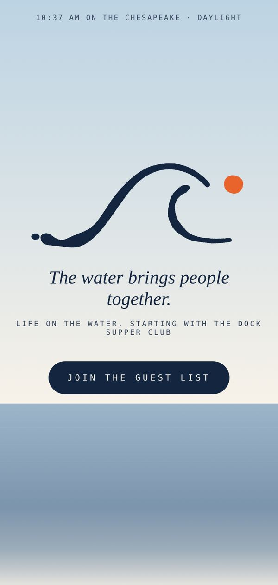

The ask.
Dock is a waterfront social club on the Chesapeake, starting with a supper club. Before the first table was set, it needed a home that felt like being on the water and a way to start gathering people.
- Client
- Waterfront social club
- Where
- Chesapeake Bay
- Site type
- The Hello
- Status
- Live
What I built.
The light
The page reads the real time of day on the Chesapeake and shifts to match, from sunrise to night water.
Guest list
Signup with a confirmation email, plus a welcome text for guests who opt in.
Stories
"Stories from these waters," a history series with a linked source behind every fact.
The mark
The hand-drawn wave and dot carried through the whole site.

Built for phones first.
The opening greets phone visitors with the current time on the water before anything else.
Behind the scenes.
Someone joins the guest list
They land on the list, get a confirmation email, and get a welcome text only if they said yes to texts.
A new story goes up
Each fact links to its source, so readers can check the history for themselves.
Want something like this?
Start with a ten-minute intake. Your fixed-price quote comes back by email within three business days.